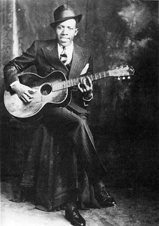

cheickh sylla
this project is for the interesting dillemia that is roboert johnsons musical carrer
Robert johnsons is often credited as the inventor of rock and roll style music after his branching away from the missisippi style delta blues. The most famous story about him is the old missisppi rumor of selling your soul at crossroads to the devil for skills. It stemmed from the many reports of how terrible and ear aching his bar music was before his 2 year disappearance. In the 1920s at the son house where he preformed the viewers would regularly tell him to go outside for air and to stop playing. He later in 1930 started traveling around the south and honing his skills with multiple styles. When he came back in 1932 he had invented a new skill and well liked guitar style that awed the sun house. Unfortunately rumor spread that he had plagiarized the devil himself.
a repeating element in the songs from Robert Johnson are his steen wording and Another is his musically style in geneal. hes the first to use the rock and roll style and he puls it off well. The way he kept drawing your attention in with the guitar while keeping the song going is great.
I went to the crossroad, fell down on my knees I went to the crossroad, fell down on my knees Asked the Lord above, "Have mercy, now, save poor Bob if you please" Yeah, standin' at the crossroad, tried to flag a ride Ooh-ee, I tried to flag a ride Didn't nobody seem to know me, babe, everybody pass me by Standin' at the crossroad, baby, risin' sun goin' down Standin' at the crossroad, baby, risin' sun goin' down I believe to my soul, now, poor Bob is sinkin' down You can run, you can run, tell my friend Willie Brown You can run, you can run, tell my friend Willie Brown That I got the crossroad blues this mornin', Lord, baby, I'm sinkin' down And I went to the crossroad, mama, I looked East and West I went to the crossroad, baby, I looked East and West Lord, I didn't have no sweet woman, ooh well, babe, in my distress
at first listen the song cross road blues sounds like a nostalgic and happy recalling of a time in the singers life when they were hanging around railway cross roads. He recalls waiting around in the sun to get on a train (Standin' at the crossroad, baby, risin' sun goin' down) and times where he had freinds attempt to chase the train down when late.(Standin' at the crossroad, baby, risin' sun goin' down). He also brought up how nobody knew him and passed him by. With the voice and wording he uses in the song you'd thing hes simply making a nostalgic style song.
When listening closer to the song you'll notice a layered meaning with his loneliness. You can see him falling to his knees st the beginning as him giving into depression. Following lines like (I believe to my soul, now, poor Bob is sinkin' down) show the depths of his depression with an indie joke. throughout the song you can hear his listed causes Such as nobody on the train knowing or caring about him. when looking into his real life he was a lone traveler since childhood and ramped up his travel around his song career. The final part of the song is probolay the compounding factor to his misery is having no woman. ( I looked East and West Lord, I didn't have no sweet woman, ooh well, babe, in my distress) initially that seems more comical until you learn that his wife died during childbirth and his second died later .